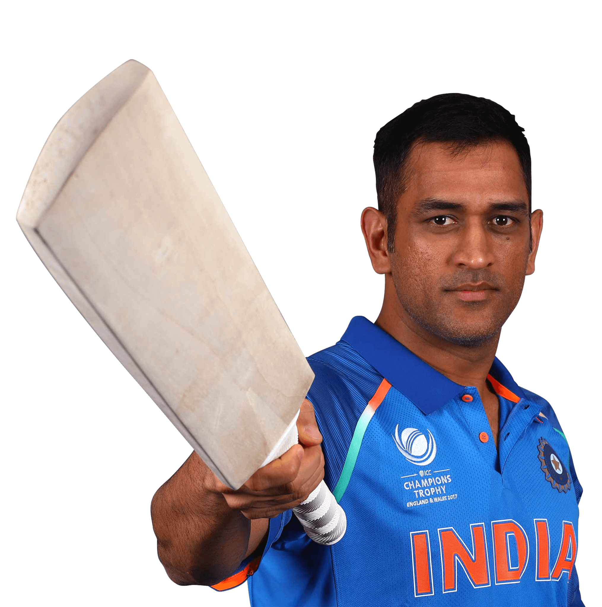

Mahendra Singh Dhoni
Mahendra Singh Dhoni, often called 'Captain Cool,' is a cricket icon and former Indian cricket team captain. Renowned for his calm demeanor and strategic prowess, Dhoni led India to numerous victories, including the 2007 ICC T20 World Cup and the 2011 ICC Cricket World Cup.
